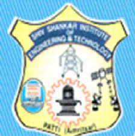

HOME
global institutes
.jpeg)
Official site - Click her!!!
Global Institutes is a leading engineering college in Punjab, which has established a reputation of trust for imparting quality education in this region. The institute boasts of a wide array of academic courses in the field of engineering, technology and management, making it a one stop destination for students with diverse requirements. Additionally, well qualified staff, excellent infrastructural facilities and brilliant performances of the students, has added a new dimension to the quality of education provided at the institute. The former students have also contributed a fair share in the job market, which opens new doors of opportunities for the fresh job aspirants who have passed out from Global Institutes.
Amritsar college of engineering and technology.jpeg)
Official site - Click her!!!
Amritsar College of Engineering and Technology flaunts a rich legacy that goes back thirteen years in time. Established in the year 2002 by the Amritsar Foundation Trust at Amritsar, ACET today has acquired the status of being one of the leading and Top Engineering College in Punjab. ACET is the AICTE approved college in Punjab that has witnessed a remarkable growth in these 13 years. ACET has evolved into a wholesome education institution offering a myriad of engineering and technical courses in Punjab. The Amritsar College of Engineering and Technology in its journey of 13 years has achieved exalted milestones cutting through various pitfalls and thoroughfares.ACET in its venture of creating a brilliant team of engineers started placements and company visits in 2006 which have continued ever since.
sri sai group of institues.jpeg)
Official site - Click her!!!
Sri Sai Group which had a very humble start in the field of Higher and Technical education in the year 1996 has become a force to reckon with now with mega campuses in Punjab at Pathankot & Amritsar and Sri Sai University at Palampur,Himachal Pradesh. The era of easy growth in any field is over now. It is the Determination, Dedication and Devotion of any organisation which make the success stories possible. The Management of Sri Sai Group of Institutes believes in walking an extra mile from others in order to make the campuses vibrant, happening and ahead of other Groups.
satyam institute of engineering and technology.jpeg)
Official site - Click her!!!
Satyam institute of engineering and technology helps to compete in todays era of technology, the most of the applications of Engineering and Technology come across all sectors. The future of Indian technocrats depends on how our technical education institutes are able to respond to this dream and challenge. This is possible only if we build and maintain the high standards in Technical Education Institutions. We need to home a vision and total commitment to achieve excellence in technical education. In order to achieve our mission, we have to equip our technocrats with required skills and know-how in engineering and technology to meet the future challenges.
central institute of plastic engg. and tech..jpeg)
Official site - Click her!!!
CIPET Centre at Amritsar was established in 1988 - 89 by Government of India for providing Training & Technical services to plastics and allied industries in the Northern region of the country. The Institute has full-fledged facilities for Mould / Die Design and Development, Plastics Processing, Testing and Quality Control of Plastics Material and Products.
baba kuma singh ji group of institutes.jpeg)
Official site - Click her!!!
BKSJE is a thriving and bubbling campus and it offers a wonderful life to its students both day scholars and hostel residents. Extra Curricular Activities at BKSJEC Your journey at BKSJEC will start with a talent hunt wherein your unique capabilities will be identified and based on your interests you will get ample opportunities to contribute to cultural events, sports competitions, computer gaming, NCC activities, NSS camps etc. The campus hosts various national and international events, cultural programmes, music concerts, plays, flash mobs etc during the entire academic year.
guru nanak dev university.jpeg)
Official site - Click her!!!
Guru Nanak Dev University was established at Amritsar on November 24, 1969 to mark the 500th birth anniversary of Sri Guru Nanak Dev Ji. It is both a residential and an affiliating university. In conceiving the future course of the University, the objectives enshrined in the Guru Nanak Dev University Act 1969, emphasised that the new University would make provision for imparting education and promoting research in the humanities, learned professions, sciences, especially of applied nature and technology
khalsa college of engineering and technology.jpeg)
Official site - Click her!!!
Established by legendary Khalsa College Charitable Society in 2009, Khalsa College of Engineering is fastest emerging as a dream destination for technical education in the sacred city of Amritsar. Sprawling over an area of 16.27 acres in the posh locality of Ranjit Avenue, the lush green campus houses aesthetically designed, colossal college building, hostels, workshops, a modern fully automated library, seminar halls, spacious classrooms and well equiped laboratories with cutting edge technology and latest softwares, instruments and machines. Every day at this premier institution is a day of discovery and innovation as we encourage creativity in young minds. Our teaching pedagogy, open door policy, special emphasis on add-on skills to suppliment the university curriculum make it a unique learning center for the students from all over India and abroad. The philosophy which guides KCET is panoramic in vission and encompasses the best. With its state-of-the-art infrastructure and highly qualified and commited faculty, KCET is opening up new vistas of learning and career opportunuties for engineering enthusiasts
mk group of institutes.jpeg)
Official site - Click her!!!
The M.K. Education Society is registered under Society Act by a group of philanthropically and academically inclined individuals who decided to work together towards the end goal fo bettement of society at large. M.K. Institutes founded in the year 2010 has a vision to convert the precious youth of today in to productive human resource of tomorrow. The Group believes in the philosophy that education of the whole person in spirit, mind and body which is the guiding principle. It is based on the understanding have tremendous potential. This potential is explored and exploited by imparting the youth the wholesome education thus preparing them to think critically and to recognize how their endeavors contribute to the well being of the society and the country at large.
radical institute of engineering.jpeg)
Official site - Click her!!!
Radical Technical Institute is a group of institutions to cater varied ambitions of aspiring students community. It is located in village Thande, Back side Kot Khalsa, Amritsar, Punjab (4 km from Guru Nanak Dev University) and was founded by S. Mangwinder Singh and S. Surat Singh Virk in the year 2013 with the prime aim of building careers and redefining education. However, an academic activity in Engineering and Management College is commenced with a vision to envision an ambience of excellence, inspiring value based education research and development. The institute is spread over an area of 15 acres accommodating the composite complex to meet the essential needs associated with technology and management education. The institute has a team of highly experienced, competent and dedicated faculty.
shiv shankar institute of engg. and tech.
Official site - Click her!!!
SSIET, Patti in Punjab was established as a degree level Professional institution in 2004 undertaking B. Tech Courses, The college is approved by AICTE and Punjab Government and is affiliated to PTU, Jalandhar.SSIET, Patti (Amritsar) is committed for imparting the best technical education. It is situated at Patti which is 45 Km from Amritsar, 60 Km from Moga and 40 Km from Beas. Spread over an area of 65,000sq. yards, the college campus is modern, attractive and well equipped for comfort, convenience and academic pursuits. This campus offers a large number of special opportunities for students. Apart from the lecutre rooms, it has fully furnished Computer LabsI, Multimedia Rooms, Tutorial room, Communication lab with Audio ,Video facility and Conference Hall.